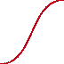

http://orcid.org/0000-0002-3224-8858
http://orcid.org/0000-0002-3224-8858
by Paul Murrell
http://orcid.org/0000-0002-3224-8858
Version 1: Sunday 05 January 2020

This document
by Paul
Murrell is licensed under a Creative
Commons Attribution 4.0 International License.
This report describes the 'gdiff' package for R, which provides tools for performing visual tests on graphical output. Visual testing is essential for checking that code is producing the correct graphical output. The goal of the 'gdiff' package is to support a wide range of testing scenarios, including testing graphical output between different versions of R.
NOTE: there are several paths and computing environments used in code examples in this report that rely on the code being run within a specific Docker container; see the Resources Section for details.
When we test code, we are interested in establishing not only that the code runs without producing errors, but also that the code produces the desired output.
Testing output requires a comparison between two sets of output, which we will label "control output" and "test output". When the output from code is graphical, one way that we can compare a control image with a test image is by comparing raster versions of the two images to see whether any pixels differ.
The following code shows a manual example of this process. We draw a control image consisting of the text "same" and a test image consisting of the words "same" and "different".
library(grid) image1 <- function() { grid.rect() grid.text("same", 1/3, 2/3) } image2 <- function() { grid.rect() grid.text(c("same", "different"), 1:2/3, 2:1/3) } ## Generate control image png("manualControl/control-image.png", width=100, height=100) image1() dev.off() ## Generate test image png("manualTest/test-image.png", width=100, height=100) image2() dev.off()
The image_compare function from the
'magick' package (Ooms, 2019)
produces an image of the difference between
the test and control images.
library(magick) controlImage <- image_read("manualControl/control-image.png") testImage <- image_read("manualTest/test-image.png") diffImage <- image_compare(controlImage, testImage, metric="AE") image_write(diffImage, "manualCompare/diff-image.png")
The images are shown below, with the control image on the left, the test image in the middle, and an image of the differences on the right, with different pixels highlighted in red (and identical pixels light grey).
The image_compare function also gives us
a count of the number of different pixels.
attr(diffImage, "distortion")
[1] 248
This provides us with a test for differences (is the number of different pixels greater than zero?), plus an image to show where differences have occurred, which can help us to track down the source of the difference within our code.
It is also possible to compare images in other ways. For example,
SVG images are text-based, so a text-based comparison using
a tool like GNU diff
can be performed. Another possibility is to reduce image files to
a unique "fingerprint", through the use of a hashing function,
and then compare image fingerprints.
This report focuses on pixel-based comparisons.
This report describes the 'gdiff' package (Murrell, 2019a)
for visual testing of graphics
code. The 'gdiff' package provides functions for generating control output
and test output and for comparing the two. The following code
shows a simple use of the package: we generate
control output from the function image1,
test output from the function image2,
and compare the two outputs, with the result being a difference
that is represented by a comparison image and a pixel difference of 248.
library(gdiff)
gdiff(list(control=image1, test=image2), "image")
Files that differ [1/1] ---------------------------------------------------------------------------------------------------- Control/image-001.png differs from Test/image-001.png (Compare/image-001.png.png [248])
There are other R packages that perform visual testing, such as 'graphicsQC' (Murrell and Gardiner, 2009), 'vdiffr' (Henry et al., 2019), 'vtest' (Chang, 2019), and 'visualTest' (Campbell and Csardi, 2019), but the aim of the 'gdiff' package is to support a broader range of testing scenarios than any of those packages. A detailed comparison of 'gdiff' with other R packages will be made later in the Discussion Section, once we have seen how the 'gdiff' package works and once we have seen some examples of its use.
The 'gdiff' package supports a wide variety of testing scenarios in two ways: it provides flexibility in the ways that graphical output can be generated; and it has low expectations about the type of graphical output that it will perform comparisons on. The 'gdiff' package also provides the result of comparisons in a very simple format, which makes it easy to build upon.
The following sections demonstrate these three aspects of the 'gdiff' package and give examples of use for the main functions in the package.
The gdiffOutput function can be used to
generate graphical output, for either control images or test images.
The first argument to this function is a function (with no arguments)
that will generate graphical
output and the second argument is a directory where image files
will be generated. The following code defines a simple
function, f, that generates a single plot and
the output from that function is generated in a single
file in a directory called "Control". The result
of the function call
is a character vector of the files that were generated.
library(gdiff)
f <- function() plot(1) gdiffOutput(f, "Control")
[1] "Control/f-001.png"
By default the name of the output file is generated by deparsing the
first argument - in this case, f becomes "f" -
but it is also possible to specify a name for the output
file in the call
to gdiffOutput.
In the code below, we change the name used for the output file to
"fun". A numeric suffix is also appended to the
output file name automatically.
gdiffOutput(f, "Control", name="fun")
[1] "Control/fun-001.png"
If the function that we give to gdiffOutput
generates several plots, the result will be
multiple files. The example below generates two plots in
two separate files. This demonstrates why the numeric suffix
is always appended to the output file names.
g <- function() { plot(1) plot(2) } gdiffOutput(g, "Control")
[1] "Control/g-001.png" "Control/g-002.png"
The function that draws plots is called with no arguments, so
the function must use data that is always available. In the
example below, the function h makes use of the
datasets::mtcars data set.
h <- function() { with(datasets::mtcars, plot(lm(mpg ~ disp))) } gdiffOutput(h, "Control")
[1] "Control/h-001.png" "Control/h-002.png" "Control/h-003.png" "Control/h-004.png"
The example in the code below uses a closure to define a function with the required data stored in the function's environment.
fungen <- function(x) { function() plot(x) } k <- fungen(1:10) gdiffOutput(k, "Control")
[1] "Control/k-001.png"
By default, the directory in which to generate output files
is created if it does not exist and emptied if it does exist.
Specifying clean=FALSE means that an existing
output directory will not be emptied. However, this is not allowed
if the directory already contains 'gdiff' output.
The code below attempts to add output to the "Control" directory
without cleaning it first, but the directory already contains
'gdiff' output, so we get an error.
gdiffOutput(f, "Control", clean=FALSE)
Error in gdiffGenerateOutput(codeFun, dir, device, clean, ncpu): Directory already contains 'gdiff' output
We will see an example later
where specifying clean=FALSE
can be useful.
By default, output is generated on a PNG
graphics device, but the device argument to the
gdiffOutput function can be
used to select a different graphics device. This expands
the range of testing scenarios to include different graphics devices.
The options
are currently
pngDevice,
pdfDevice,
cario_pdf_device, and
postscriptDevice. The following code generates
output on a PDF device.
gdiffOutput(f, "Control", device=pdfDevice())
[1] "Control/f-001.pdf"
The value of the device function can also be a list
of devices, in which case output is generated for each device.
The following code generates each page of output twice:
once on a PNG device and once on a PDF device.
gdiffOutput(f, "Control", device=list(pngDevice(), pdfDevice()))
[1] "Control/f-001.pdf" "Control/f-001.png"
The device functions allow arguments to be passed
to the graphics device, for example to control the size or resolution
of the device. We will see some examples later.
Output is generated within a "session" of R, which by default is the current R session. The following code makes that explicit.
gdiffOutput(f, "Control", session=currentSession())
[1] "Control/f-001.png"
The libPaths argument to the currentSession
function can be used to specify
a directory from which packages will be loaded when generating
output. This expands the range of testing scenarios to
allow the same code to be tested on different
versions of a package (and its dependencies).
The following code installs two different versions of the 'grImport' package (Murrell, 2009) into two different directories.
oldPkgDir <- file.path(tempdir(), "oldPackages") dir.create(oldPkgDir) newPkgDir <- file.path(tempdir(), "newPackages") dir.create(newPkgDir) install.packages("grImport_0.9-1.tar.gz", repos=NULL, lib=oldPkgDir) install.packages("grImport_0.9-2.tar.gz", repos=NULL, lib=newPkgDir)
We can now generate control output based on one version of 'grImport' and test output based on the other version of 'grImport'. The resulting images are displayed in each case to show that they are different.
grImport <- function() { ## grImport_0.9-2 added ability to import 'skewed' pictures library(grImport) PostScriptTrace("transform.ps", "transform.xml") img <- readPicture("transform.xml") grid.picture(img) detach("package:grImport") } gdiffOutput(grImport, dir="Control", session=currentSession(libPaths=oldPkgDir))
[1] "Control/grImport-001.png"
gdiffOutput(grImport, dir="Test", session=currentSession(libPaths=newPkgDir))
[1] "Test/grImport-001.png"
We can generate output within a separate R session with the
localSession function. The following code
repeats the 'grImport' example, but uses a separate R session
to generate both control and test output.
Notice that the test
function grImport now no longer needs to detach
the 'grImport' package (because the package is loaded within a
separate R session).
grImport <- function() { ## grImport_0.9-2 added ability to import 'skewed' pictures library(grImport) PostScriptTrace("transform.ps", "transform.xml") img <- readPicture("transform.xml") grid.picture(img) } gdiffOutput(grImport, dir="Control", session=localSession(libPaths=oldPkgDir))
[1] "Control/grImport-001.png"
gdiffOutput(grImport, dir="Test", session=localSession(libPaths=newPkgDir))
[1] "Test/grImport-001.png"
The localSession function also has an
Rpath argument so that we can generate output within
a separate R session using a different version of R.
This expands the range of testing scenarios to include
comparisons between different versions of R.
The following code generates output from the axis
help page examples using a separate R session running
R version 3.5.3 for control output and
the current R session, which is
R version 3.6.1, for test output. The test output generates
an extra file of output because an extra example was added to
the axis help page in R version 3.6.0.
f <- function() { ## R 3.6.0 introduced 'gap.axis' argument to axis(), with example example(axis, setRNG=TRUE, echo=FALSE, ask=FALSE) } ## Allow for different R versions to correspond Sys.setenv("R_DEFAULT_SAVE_VERSION"=2, "R_DEFAULT_SERIALIZE_VERSION"=2) ## R session running R 3.5 gdiffOutput(f, "Control", session=localSession(Rpath="/home/R/R-3.5.3/bin/Rscript"), device=pngDevice(type="cairo"))
[1] "Control/f-001.png" "Control/f-002.png" "Control/f-003.png"
## Current session running R 3.6 gdiffOutput(f, "Test")
[1] "Test/f-001.png" "Test/f-002.png" "Test/f-003.png" "Test/f-004.png"
There is also a remoteSession function and
a dockerSession function so that we can generate output on
different platforms. The remoteSession function requires
either a host name (and possibly a user) or
a "cluster" object
(as generated by parallel::makeCluster) and the
dockerSession function requires the name of a docker
image.
In both cases, the libPaths
and the Rpath can also be set.
This expands the range of testing scenarios to include
comparisons between different operating system platforms
and interactions between package versions, R versions, and
operating system platforms.
The following code repeats the axis example,
but this time we generate the test output in a docker container
that has R version 3.6.1 installed.
## Docker session has R 3.6 installed gdiffOutput(f, "Control", session=localSession(Rpath="/home/R/R-3.5.3/bin/Rscript"), device=pngDevice(type="cairo"))
[1] "Control/f-001.png" "Control/f-002.png" "Control/f-003.png"
## R session running R 3.5 gdiffOutput(f, "Test", session=dockerSession("pmur002/gdiff-test"))
E> Loading required package: gdiff
[1] "Test/f-001.png" "Test/f-002.png" "Test/f-003.png" "Test/f-004.png"
This sort of "remote" output generation requires some set up. For example, the 'gdiff' package at least must be installed on the remote system or the docker image, and of course R itself must also be installed.
There are two other high-level functions for generating
graphical output.
The gdiffExamplesOutput() function
generates output from the examples section
of the specified function (either a function name or a function object).
The following code generates 4 files of output from the examples
on the help page for the plot function.
gdiffExamplesOutput("plot", "Control")
[1] "Control/plot-001.png" "Control/plot-002.png" "Control/plot-003.png" "Control/plot-004.png"
The gdiffPackageOutput() function
generates output from all examples sections of all exported
functions in a package. The following code generates 10 files
of output by running all of the examples in the 'gridBezier' package.
gdiffPackageOutput("gridBezier", "Control")
[1] "Control/BezierGrob-001.png" "Control/BezierNormal-001.png" "Control/BezierPoints-001.png" [4] "Control/BezierTangent-001.png" "Control/grid.Bezier-001.png" "Control/grid.quad-001.png" [7] "Control/quadGrob-001.png" "Control/quadNormal-001.png" "Control/quadPoints-001.png" [10] "Control/quadTangent-001.png"
The previous section demonstrated the flexibility that the 'gdiff' package provides for generating graphical output. This section looks at how we can compare two sets of output. We will see that the low expectation that 'gdiff' has for graphical output files further expands the range of testing scenarios that are supported.
The 'gdiff' package performs comparisons of control and test images based on the following assumptions:
Given existing test and control output,
the gdiffCompare function can be used to
compare two sets of output. We just have to name the
directory that contains the control output, the directory
that contains the test output, and the directory to use
for any comparison output.
The following code creates a single control output file and a single test output file, both based on the same function, but with control output generated by R version 3.5.3 and test output generated by R version 3.6.1.
f <- function() plot(1) gdiffOutput(f, "Control", session=localSession(Rpath="/home/R/R-3.5.3/bin/Rscript"), device=pngDevice(type="cairo"))
[1] "Control/f-001.png"
gdiffOutput(f, "Test")
[1] "Test/f-001.png"
The following call to gdiffCompare compares the
two output files and reports that they are identical
(so the output from plot(1) has not changed from
R version 3.5.3 to R version 3.6.1).
gdiffCompare("Control", "Test", "Compare")
Identical files [1/1] ---------------------------------------------------------------------------------------------------- Control/f-001.png matches Test/f-001.png
Comparisons are performed on PNG output, so if the output files
are not PNG files, they are converted to PNG format for comparison
(using magick::image_convert).
There is also a gdiff function, which can be used
to generate output and perform the comparison in one go. By default,
this function uses the names "Control",
"Test", and "Compare" for the three
directories. Many of
the examples in this section will use gdiff
because it makes it easier to set up
the output that we want to compare.
The following code uses the function f to
generate control output and test output and compare
the resulting output files.
gdiff(f)
Identical files [1/1] ---------------------------------------------------------------------------------------------------- Control/f-001.png matches Test/f-001.png
The example above shows one of the possible outcomes of a comparison:
the output files are identical. Another very simple case is
when the files differ. This example demonstrates that
the session argument to gdiff can be
a named list of sessions, one for generating control output
and one for generating test output.
gdiff(grImport, session=list(control=localSession(libPaths=oldPkgDir), test=localSession(libPaths=newPkgDir)))
Files that differ [1/1] ---------------------------------------------------------------------------------------------------- Control/grImport-001.png differs from Test/grImport-001.png (Compare/grImport-001.png.png [13142])
A third (and fourth) possible case can arise when a control output file
has no corresponding test output file (or vice versa).
The following code demonstrates the comparison result in this
situation. This example shows that the first argument to
gdiff can also be a list of functions, one for
generating control output and one for test output. It is also
possible to specify NULL, in which case no output
is generated (and the output directory is not cleaned).
We have to specify a name in the call to
gdiff in this case because we have provided a
list of functions to generate output (so gdiff cannot
generate output file names by itself).
gdiff(list(control=f, test=NULL), name="f")
Mismatched files [2] ---------------------------------------------------------------------------------------------------- Control/f-001.png had no matching test output Test/grImport-001.png had no matching control output
The following code shows a more realistic scenario:
we check the output from the axis function
between R versions 3.5 and 3.6 to show that all output remained
the same, but there is an additional example in R 3.6.
gdiffExamples("axis", session=list(control=currentSession(), test=localSession(Rpath="/home/R/R-3.5.3/bin/Rscript")), device=pngDevice(type="cairo"))
Identical files [3/3] ---------------------------------------------------------------------------------------------------- Control/axis-001.png matches Test/axis-001.png Control/axis-002.png matches Test/axis-002.png Control/axis-003.png matches Test/axis-003.png Mismatched files [1] ---------------------------------------------------------------------------------------------------- Control/axis-004.png had no matching test output
The above examples demonstrate that gdiff
(and gdiffCompare) support all of the testing scenarios
that were described in the previous section on generating graphical
output. The next examples make use of the fact that files to
be compared just have to have the same name (but reside in
different directories) to support some additional testing
scenarios.
The following code shows that we can use different R functions
to generate output, but use the same name for the output files.
In this case, we compare the grid::grid.bezier
function with the gridBezier::grid.Bezier function.
x <- c(0, 0.5, 1, 0.5) y <- c(0.5, 1, 0.5, 0) f1 <- function() { grid::grid.bezier(x, y) } f2 <- function() { gridBezier::grid.Bezier(x, y) } gdiff(list(control=f1, test=f2), name="bezier")
Files that differ [1/1] ---------------------------------------------------------------------------------------------------- Control/bezier-001.png differs from Test/bezier-001.png (Compare/bezier-001.png.png [2222])
The images that were generated by the code above are shown below,
in the order control, test, and comparison.
This demonstrates the slight difference between the X-Spline approximation
to a Bezier curve that grid.bezier produces
and the true Bezier curve that grid.Bezier produces.
The following code uses the same approach (controlling the names
of output files) to compare output from
two different graphics devices, pdf versus
cairo_pdf.
gdiff(f, device=list(control=pdfDevice(), test=cairo_pdf_device(suffix=".pdf", bg="transparent")))
Files that differ [1/1] ---------------------------------------------------------------------------------------------------- Control/f-001.pdf differs from Test/f-001.pdf (Compare/f-001.pdf.png [496])
The small differences that show up here come from small differences in fonts (Helvetica for the standard PDF device versus TeXGyreHeros for the Cairo PDF device, plus the fact that the standard PDF device actually draws the data symbol using the ZapfDingbats font).

The next example
demonstrates that we do not even
require the control or test output to be generated by R.
Here we compare the output generated by MetaPost
(Hobby and the MetaPost development team, 2018)
with the output generated by the 'metapost' R package
(Murrell, 2019b).
This example involves multiple steps:
we generate MetaPost output manually,
with a specific name in a specific directory;
then we call
gdiff with list(control=NULL, test=f)
so that we do not
generate any control output,
name="scurve" so that the test file has the same
name as the control file,
controlDir=MetaPostControl to
specify where the control output is located,
device=postscritpDevice so that the test output
is generated in the same format as the control output,
clean=list(control=FALSE, test=TRUE,
compare=TRUE) so that we do not clean the control directory,
and the comparison occurs between the manually-generated PostScript file
and the PostScript file that gets generated by f.
library(metapost) options(metapost.units="in") scurve <- knot(0, 0) + dir(0) + dir(0) + knot(1, 1) metapost(scurve, "scurve.mp") mpost("scurve.mp", template="%j.ps") MetaPostDir <- "MetaPostControl" dir.create(MetaPostDir, showWarnings=FALSE) system(paste0("cp scurve.ps ", file.path(MetaPostDir, "scurve-001.ps"))) f <- function() { grid.metapost(scurve) } gdiff(list(control=NULL, test=f), name="scurve", controlDir=MetaPostDir, device=postscriptDevice(width=1, height=1, paper="special", horizontal=FALSE), clean=list(control=FALSE, test=TRUE, compare=TRUE))
Files that differ [1/1] ---------------------------------------------------------------------------------------------------- MetaPostControl/scurve-001.ps differs from Test/scurve-001.ps (Compare/scurve-001.ps.png [216])
The results show that the default line width in R is not the same as the default line width in MetaPost (in fact the default line width in MetaPost is hard for R to match because it is effectively zero, or the thinnest line that PostScript can produce).

In this final comparison example, we show that, although it is not possible to add output to a directory that already contains 'gdiff' output, we can generate output in more than one directory and perform a comparison based on multiple control and/or test directories. In this case, the output files are all (deliberately) identical.
f <- function() plot(1) g <- function() { plot(1) plot(2) } gdiffOutput(f, "Control1")
[1] "Control1/f-001.png"
gdiffOutput(g, "Control2")
[1] "Control2/g-001.png" "Control2/g-002.png"
gdiffOutput(f, "Test1")
[1] "Test1/f-001.png"
gdiffOutput(g, "Test2")
[1] "Test2/g-001.png" "Test2/g-002.png"
The following code shows that the controlDir and
the testDir arguments to gdiff
accept multiple directories.
gdiffCompare(controlDir=c("Control1", "Control2"), testDir=c("Test1", "Test2"), "Compare")
Identical files [3/3] ---------------------------------------------------------------------------------------------------- Control1/f-001.png matches Test1/f-001.png Control2/g-001.png matches Test2/g-001.png Control2/g-002.png matches Test2/g-002.png
This section describes the structure of the results from a 'gdiff' comparison.
The return value from gdiff (and
gdiffCompare) is a list with class
"gdiffComparison". The 'gdiff'
package provides a print method for this class
that produces a simple summary of the comparison results.
result <- gdiffExamples("axis", session=list(control=currentSession(), test=localSession(Rpath="/home/R/R-3.5.3/bin/Rscript")), device=pngDevice(type="cairo")) result
Identical files [3/3] ---------------------------------------------------------------------------------------------------- Control/axis-001.png matches Test/axis-001.png Control/axis-002.png matches Test/axis-002.png Control/axis-003.png matches Test/axis-003.png Mismatched files [1] ---------------------------------------------------------------------------------------------------- Control/axis-004.png had no matching test output
The details argument can be used to
simplify the output even further. This may be useful
when a large number of images are being compared.
print(result, detail=FALSE)
Identical files [3/3] Mismatched files [1]
A "gdiffComparison" is a simple list so it is easy
to present the results of a comparison in other ways.
For example, the following code embeds the control, test, and
difference images from a comparison within HTML tags for
inclusion in this report.
f <- function() plot(1) g <- function() plot(2)
result <- gdiff(list(control=f, test=g), name="plot") cat(sapply(result[1:3], function(x) paste0("<img src='", x, "'>")))
When we generate output, the 'gdiff' package creates a
.gdiffSession file in the output directory.
This file contains information about the R session that was
used to generate the output.
When we perform a comparison, this information is read in
and included in the comparison result.
In the following code, we perform a comparison using two different sessions and the resulting session information shows the different R versions being used in those two sessions.
result <- gdiff(f, session=list(control=localSession(Rpath="/home/R/R-3.5.3/bin/Rscript"), test=dockerSession("pmur002/gdiff-test")), device=pngDevice(type="cairo"))
E> Loading required package: gdiff
result$controlInfo
[[1]] [[1]]$info R version 3.5.3 (2019-03-11) Platform: x86_64-pc-linux-gnu (64-bit) Running under: Ubuntu 16.04.3 LTS Matrix products: default BLAS: /home/R/R-3.5.3/lib/libRblas.so LAPACK: /home/R/R-3.5.3/lib/libRlapack.so Random number generation: RNG: Normal: Sample: locale: [1] C attached base packages: [1] stats graphics grDevices utils datasets methods base other attached packages: [1] gdiff_0.1-0 loaded via a namespace (and not attached): [1] compiler_3.5.3 parallel_3.5.3 Rcpp_1.0.3 pdftools_2.3 qpdf_1.1 askpass_1.1 [[1]]$count [1] 1
result$testInfo
[[1]] [[1]]$info R version 3.6.1 (2019-07-05) Platform: x86_64-pc-linux-gnu (64-bit) Running under: Ubuntu 16.04.3 LTS Matrix products: default BLAS: /usr/lib/libblas/libblas.so.3.6.0 LAPACK: /usr/lib/lapack/liblapack.so.3.6.0 locale: [1] C attached base packages: [1] stats graphics grDevices utils datasets methods base other attached packages: [1] gdiff_0.1-0 loaded via a namespace (and not attached): [1] compiler_3.6.1 parallel_3.6.1 Rcpp_1.0.2 pdftools_2.2 qpdf_1.1 askpass_1.1 [[1]]$count [1] 1
We can generate control and test output on a range of devices
by specifying different values for the device
argument to the various 'gdiff' functions. A few common graphics
devices are already supported (e.g., PNG and PDF), but the range
can easily be expanded by defining support for a new graphics device.
A new device must be a "gdiffDevice" object, as generated by the
gdiffDevice function.
This function takes a name for the
device, a suffix (which defaults to the name)
to be used on output files generated by the device, and two
functions, open and close.
The open function takes a name argument
that should be used to generate file names for output files; this
function should open a graphics device.
The close function defaults to a call to dev.off.
The code below shows the definition of a very basic SVG device.
gdiffDevice("svg", open=function(name) { svg() })
$name
[1] "svg"
$suffix
[1] "svg"
$open
function(name) {
svg()
}
$close
function (dir, name)
dev.off()
<environment: 0x3018438>
attr(,"class")
[1] "gdiffDevice"
The predefined devices provide convenience functions that allow for
parameters to be passed to the open function.
The code below shows the definition of an SVG device convenience function.
The predefined
output devices in the 'gdiff' package provide other examples.
svgDevice <- function(...) { gdiffDevice("svg", open=function(name) { svg(paste0(name, "-%03d.svg"), ...) }) }
The following code shows the new svgDevice in action.
f <- function() plot(1) gdiff(f, device=svgDevice())
Identical files [1/1] ---------------------------------------------------------------------------------------------------- Control/f-001.svg matches Test/f-001.svg
It is also possible to define a new type of 'gdiff' session.
A session must be a "gdiffSession" object, as generated
by the gdiffSession function. The only argument
to that function is a class for the new type of session.
A generateOutput method should then be written
for that new session class. This function is responsible for
generating output files; it will typically perform
some set up steps and clean up steps and call
gdiffGenerateOutput to generate the output files.
The predefined sessions in 'gdiff' provide a range of examples.
This section describes some important internal design details of the 'gdiff' package. This is to help future authors with further development of the package, possibly including the original package author's future self.
The public functions in 'gdiff' that generate output files
and compare output files are all based on a core function
called gdiffCore. This function can generate control
output, generate test output,
and perform comparisons, or any subset of those operations.
The argument list to gdiffCore is basically a
superset of the arguments to the public functions that generate
output or perform comparisons, except for the
first argument.
The first argument to gdiffCore, called codeFun,
is a "function
generator". This is a function that creates a named list of functions.
This function generator is passed, via the generateOutput
method for the 'gdiff' session,
all the way in to gdiffGenerateOutput.
The function generator is called
to generate a named list of functions and then each function in that list
is called
on each graphics device to generate output files.
A simple example of a function generator is the one used by
function methods of gdiff and
gdiffOutput. These just take the function argument
that they are provided and store it in a list, with the appropriate name.
A more complex function generator example is the one used by
gdiffPackage and gdiffPackageOutput.
This involves generating a list of functions based off the list
of exported symbols for a given package. For each exported
symbol we generate a function that essentially calls the
example function.
The 'gdiff' package provides tools for detecting changes in graphical output, but this sort of testing is also provided by several other R packages, including 'graphicsQC', 'vdiffr', and 'vtest'.
One motivation for the 'gdiff' package was to create a simpler version of 'graphicsQC'. In particular, 'gdiff' has a much simpler design for keeping track of the list of output files that have been generated and the results of comparisons. This allows the 'gdiff' package to be more flexible in terms of the testing scenarios that are supported and makes 'gdiff' easier to extend.
The 'vdiffr' package integrates with the 'testthat' package (Wickham, 2011) to add visual testing. The 'gdiff' package supports a wider range of testing scenarios than 'vdiffr', including comparing between R versions, and 'gdiff' is more independent of the testing framework. This likely makes it harder to integrate with 'testthat', but makes is easier to use in other contexts. The 'gdiff' package also supports multiple graphics devices, while 'vdiffr' is focused on the SVG format.
The 'gdiff' package is very much focused on detecting differences between output files, but has nothing to say about which of two different images is the correct one. The 'vdiffr' package provides support for validating images and keeping track of "model" images that have been verified as correct. The 'vdiffr' package also provides some useful details like platform-independent fonts and provides multiple ways to view the differences between images.
The 'vtest' package is similar to 'gdiff' in that it compares raster versions of images, though it takes a very different approach to tracking output files and performing comparisons. The main limitation of the 'vtest' package compared to 'gdiff' is that it currently appears to only work with 'ggplot2' images and PDF output.
The 'gdiff' package could be used with R CMD check
by generating a set of control images within the package, then
running tests that generate test images and compare them with
the control images.
However, R CMD check
is just one testing scenario (where we generate results from
one version of R and one version of a package against output
that was generated with previous version of a package and some
unknown version of R). The 'gdiff' package aims to also support a
wider range of testing scenarios.
It would be useful to support some of the nice features from 'vdiffr' within 'gdiff'. In particular, it would be useful to make use of cross-platform fonts to avoid spurious differences arising between different operating system platforms.
It would also be useful to expand the convenience functions
for generating output. For example, we could add a function
to generate output from the tests/ directory
within a package.
The examples and discussion in this report relate to version 0.1-0 of the 'gdiff' package.
This report was generated within a Docker container (see Resources section below).
dockerSession example
made use of a
Docker image that is available from
Docker Hub
or via its
Dockerfile.
Murrell, P. (2019). "Visual Testing for Graphics in R" Technical Report 2019-??, Department of Statistics, The University of Auckland. Version 1. [ bib | DOI | http ]
This document
by Paul
Murrell is licensed under a Creative
Commons Attribution 4.0 International License.